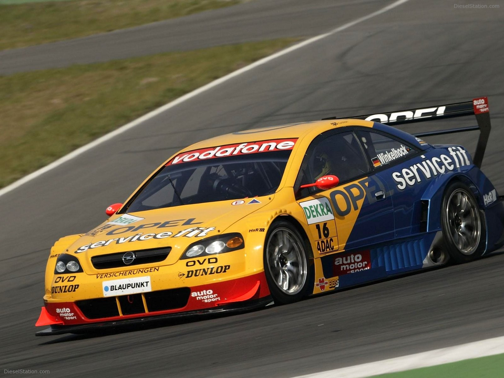
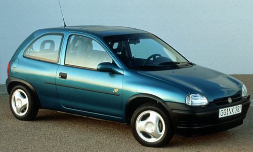
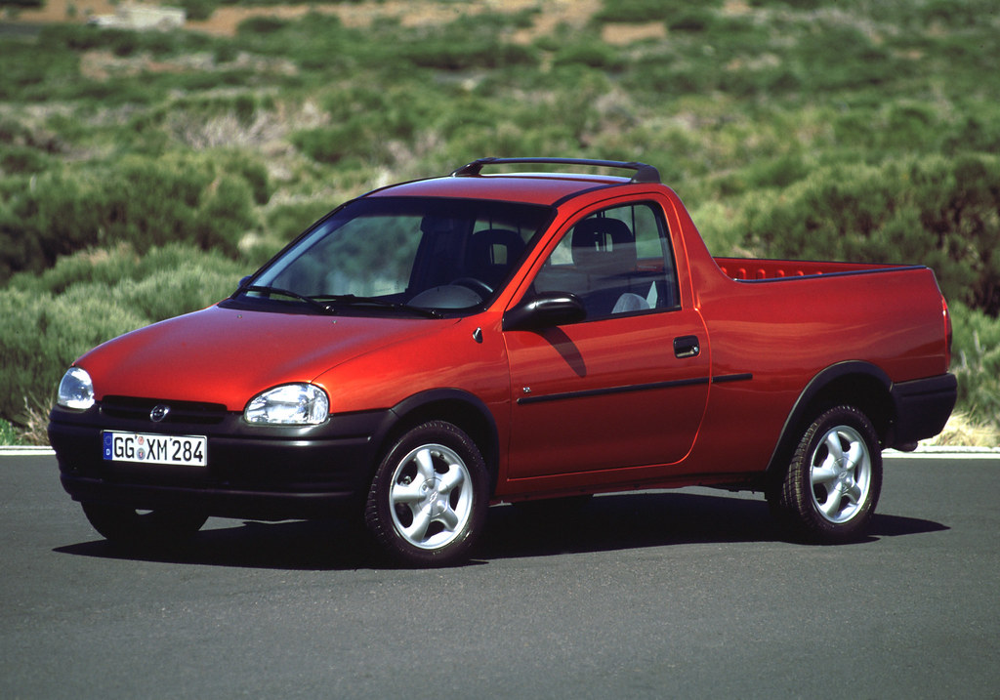
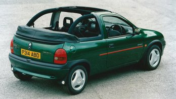
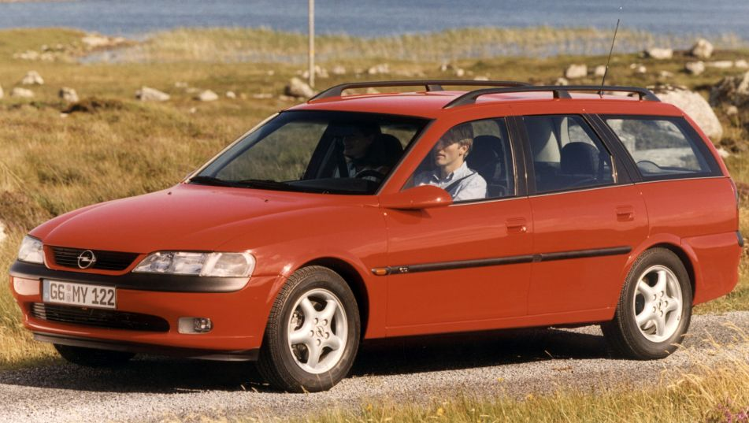

Przewiń w Dół!!!





Opel to jedna z najlepszych marek samochodów, wpisały się w historię motoryzacji jako kultowe.
Wygrali nawet na Oplu Astra G 24 godziny Nurburgringa w 2003.
A Opel Corsa B to wg. jeden z najlepszych modeli bo miał 8 wersji nadwozia na tej samej platformie.
Opel Vectra B w wesji kombi miała jeden z największych bagażników wśród wszystkich kombijaków
w swoim klasie cenowym w latach 90-ych. Przy tym zachowując komfort dla wszystkich pasażerów.
| Model Opla | Lata produkcji | 3 | 4 | 5 | 6 | 7 | 8 |
|---|---|---|---|---|---|---|---|
| Corsa B | 1993 - 2000 | ||||||
| Vectra A | 1988 - 1995 | ||||||
| Rekord D | 1972 - 1977 | ||||||
| Vectra B | 1995 - 2002 | ||||||
| 5 | |||||||
| 6 | |||||||
| 7 | |||||||
| 8 |